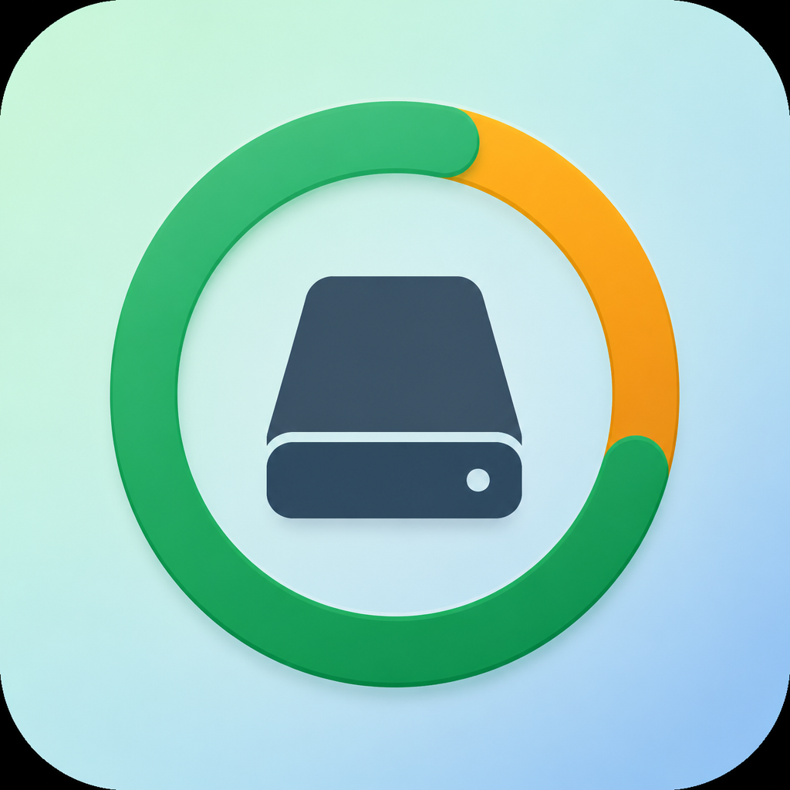
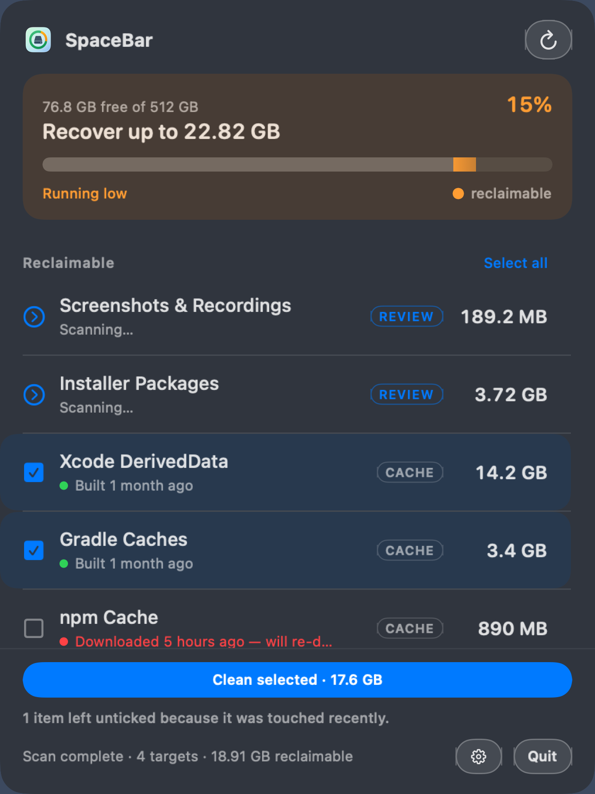
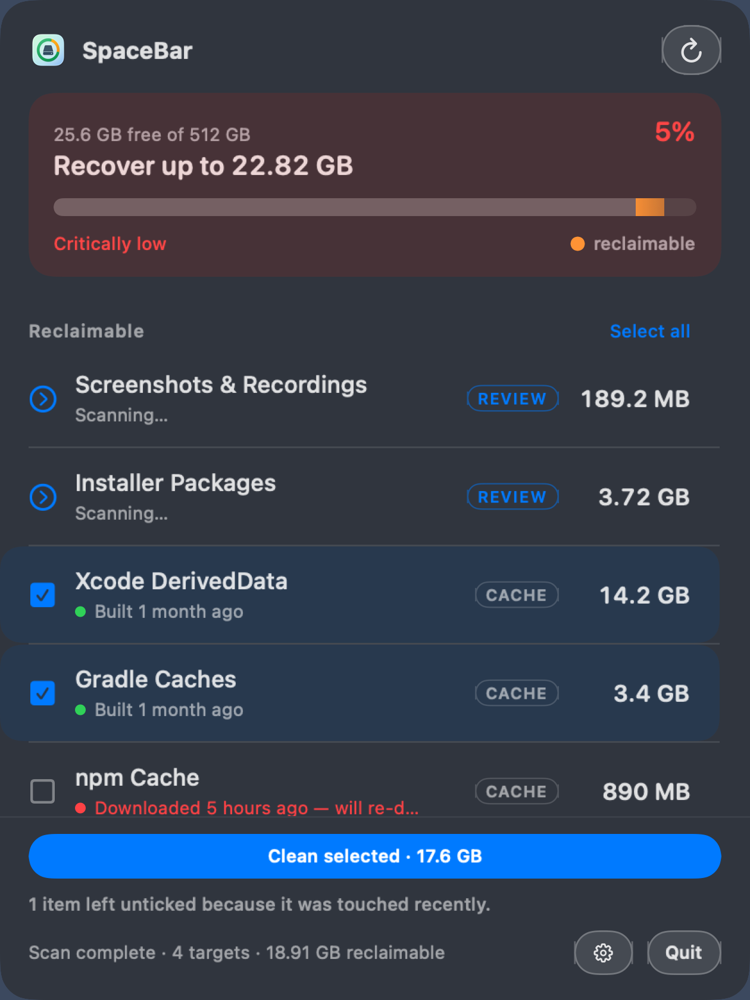
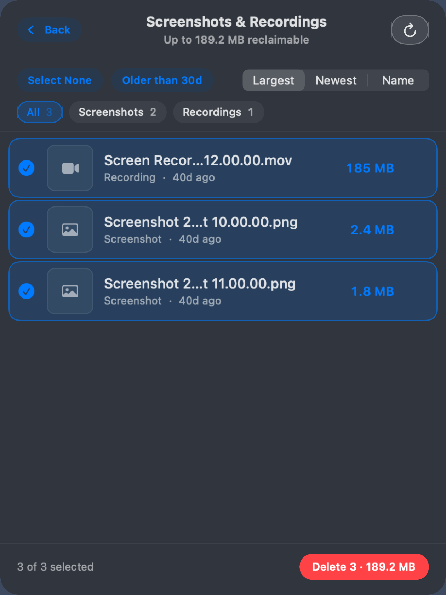
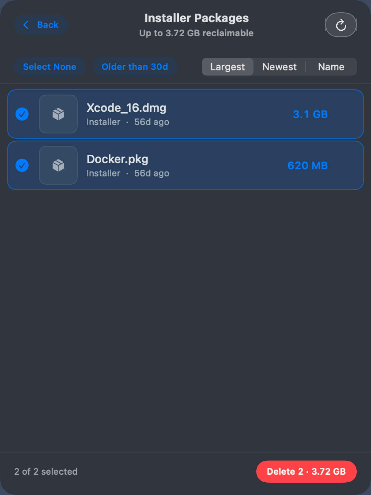
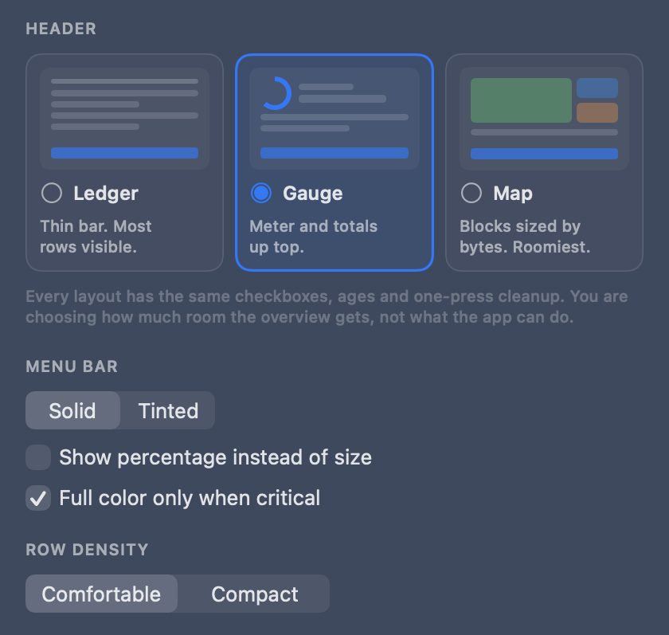
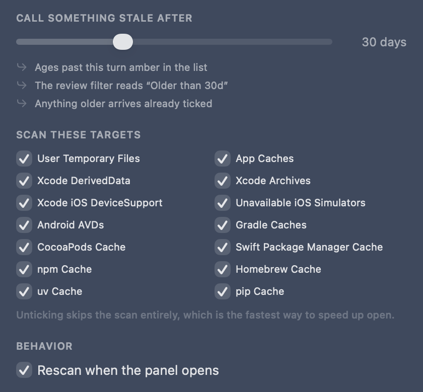

Always-on free-space radar
A colored pill in the menu bar so you notice the crunch before Xcode, Docker, or the next agent run stalls.

SpaceBar
Agents, copilots, and nonstop builds leave DerivedData, Docker layers, package caches, and screenshot piles everywhere. SpaceBar sits in your menu bar, shows how bad it is, and lets you wipe regenerable junk in one click — before “Storage Almost Full” ruins your flow.

Green when you’re fine. Orange when AI week is catching up. Red when it’s time to clean — now.


The headline is what you can recover, not what is left. Free space is already in the menu bar all day — repeating it as the panel’s biggest number spends the largest type on something you just read on the way in.
Pick how much of the panel the overview gets. The list, the ticks and the one-press cleanup underneath are identical in all three.


Gauge is the default: a capacity meter with recoverable space as the headline. Map needs at least three items to be worth drawing — below that it falls back to Gauge and says why, instead of silently ignoring your choice. Small targets fold into one “Everything else” tile rather than becoming unreadable slivers.
Size tells you what is worth cleaning. Age tells you what is safe to clean — and each kind of junk says it in its own words.
Last usedCaches you have not touchedBuiltDerivedData, Gradle — cleaning forces a rebuildDownloadedPackage caches, installers — will re-downloadEmptiedTrash, since you last emptied itCapturedScreenshots — you may still need theseBootedSimulators you last ran months agoOld is the safe thing here, so the usual heat map is inverted: cold and forgotten is green, freshly touched is amber. Anything older than your stale setting arrives pre-ticked, anything newer arrives untouched — and the footer says so: “1 item left unticked because it was touched recently.”
Screenshots, recordings, and downloaded installers are review lists, not one-shot deletes. Sort, filter, tick, keep the rest.


Every control restates itself in your units, against your actual disk — a measurement tool’s settings should measure something too.



“Stale” is one number driving three things: when an age turns amber, what the review filter chip says, and what arrives pre-selected. Defaults are 20% orange, 10% red, 30 days stale — and the target list doubles as an explanation, greying out “Docker — not installed” so you know why the scan found four things instead of twelve.
More AI, more builds, more caches — SpaceBar turns that invisible pile into gigabytes you can get back today.
A colored pill in the menu bar so you notice the crunch before Xcode, Docker, or the next agent run stalls.
Tick what you want across every kind of junk. The button carries the live total; one confirmation lists exactly what goes.
Review Desktop, Pictures, Movies, and Downloads captures. Sort, filter by age, keep what still matters.
Deleted ≠ free. Empty Trash from SpaceBar — never pre-selected, since it is the one irreversible target.
Deletes stay on a path allowlist under your home folder. Archives, AVDs, and Trash ask harder before they go.
Decimal GB like System Settings → Storage. Same language as the warning you’re trying to escape.
If a tool isn’t on your machine, SpaceBar skips it. Everything else is fair game for reclaim.
Recoverable over free. Age as the second number. One loud thing per screen. The design review behind SpaceBar’s panel, written up as principles you can reuse.
Swift + SwiftUI on macOS 14+ — no Electron bloat stealing the space you just freed.